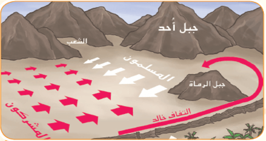

عزيزي القارئ هذه المعلومات من مصادر موثوفة وأخذناها من كتاب غزوة احد للكاتب احمد باشميل ننصحكم بعدم زيارة أي موقع إلا بالتحقق من مصدر المعلومات اللتي قدمها
كتاب غزوة احد هو كتاب يتحدث عن اهم غزوة للرسول محمد صلى الله عليه وسلم وسوف نعرف ما هو الخطأ الذ ارتكبه الجنود المكلفين بمهمة رمي الاسهم من اعلى الجبل وسوف نعرف ما هي مخاطر عدم الاستماع لاوامر القائد
الاطراف : المسلمين بقياده سيدنا محمد صلى الله عليه وسلم ضد المشركين بقرب مدينة أحد
غزوة أحد هي إحدى المعارك الهامة التي وقعت في العام الثالث للهجرة (في عام 625 ميلادي) بين المسلمين بقيادة النبي محمد صلى الله عليه وسلم والمشركين قرب مدينة أحد في الجزء الجنوبي من المملكة العربية السعودية الحالية. تأتي هذه الغزوة بعد معركة بدر الكبرى التي كانت نصرًا مهمًا للمسلمين. سبب الغزوة: بعد هزيمة المشركين في معركة بدر، كانوا يرغبون في الانتقام. أيضًا، كانوا يسعون للتأكد من أمان حليفهم اليهودي قريش بني قينقاع. تطورات الغزوة: تم استعداد المسلمين لمواجهة القوات المشركة بقيادة خالد بن الوليد في موقع يسمى "أحد". وقعت معركة أحد في 31 مارس عام 625، وكان للمشركين استراتيجية محكمة حيث نجحوا في الفرار وكادوا يُلحقون الهزيمة بالمسلمين. وقعت حادثة تسمى "حادثة الفخ" حيث انفصلت مجموعة من المسلمين عن مكان تمركزهم بسبب إشاعة عن غنيمة. تأثيرات الغزوة: خسر المسلمون في هذه المعركة، وقد أصابتهم خسائر كبيرة. تعلم المسلمون من أخطائهم في هذه المعركة، وكانت درسًا هامًا في تكتيك الحرب. رغم خسارة المسلمين في غزوة أحد، إلا أنهم استمروا في النمو والتطور، وتعلموا من تجاربهم لتحقيق النجاح في المعارك اللاحقة.